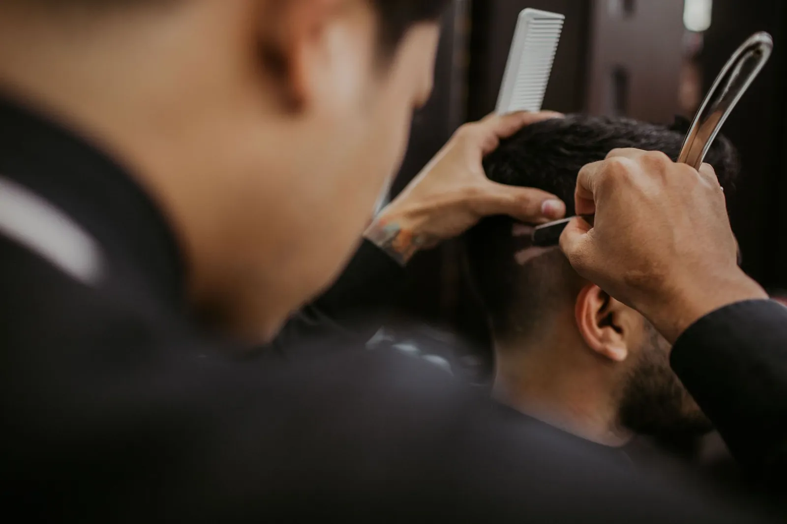
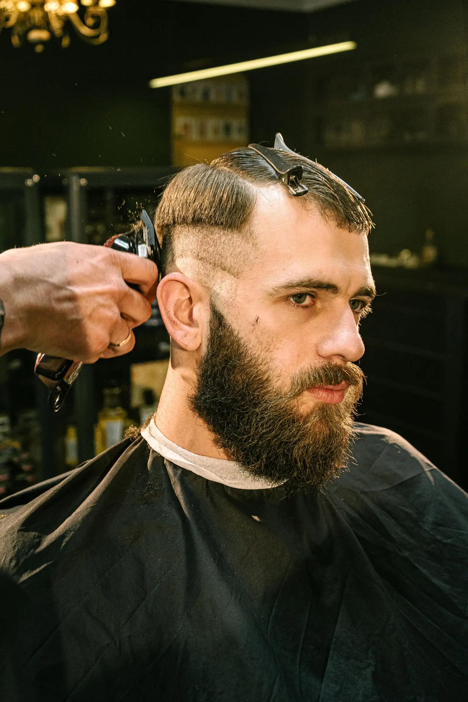
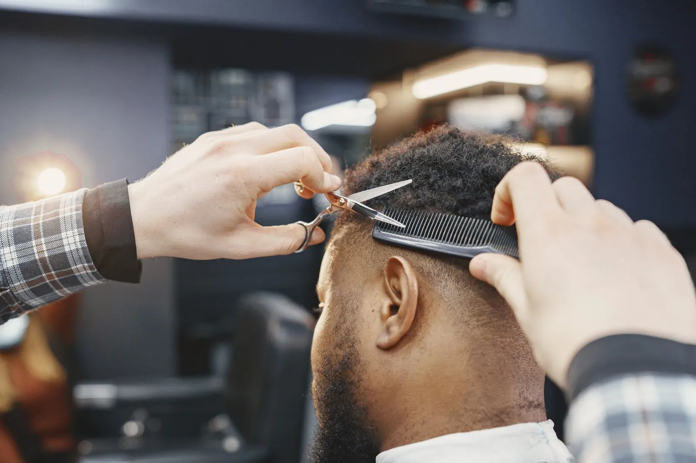
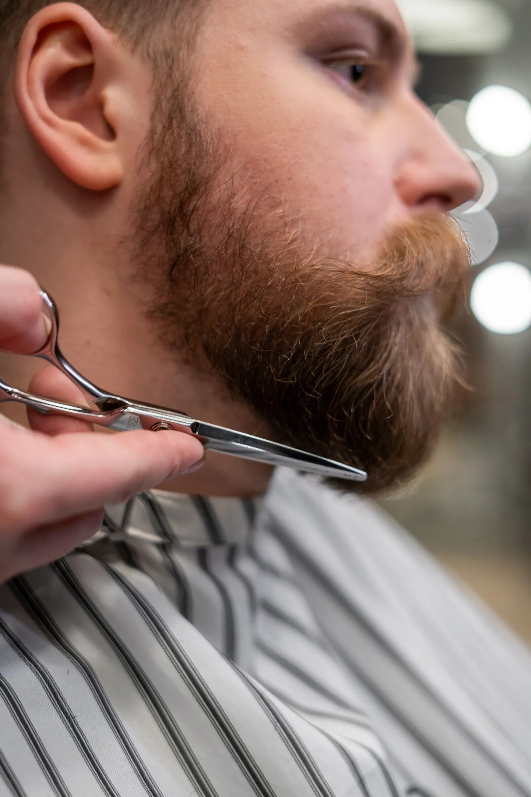
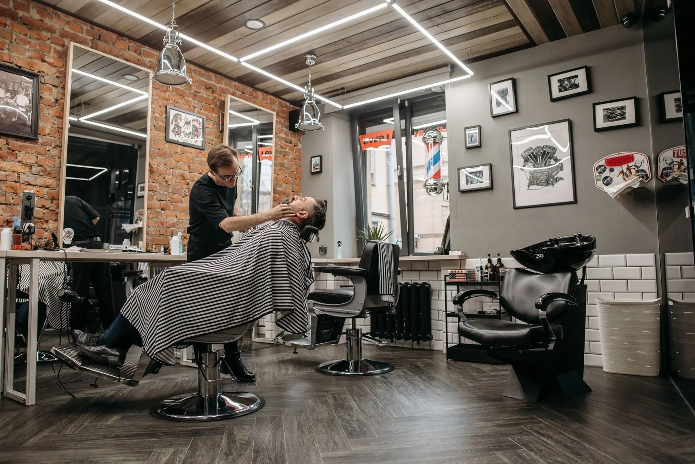
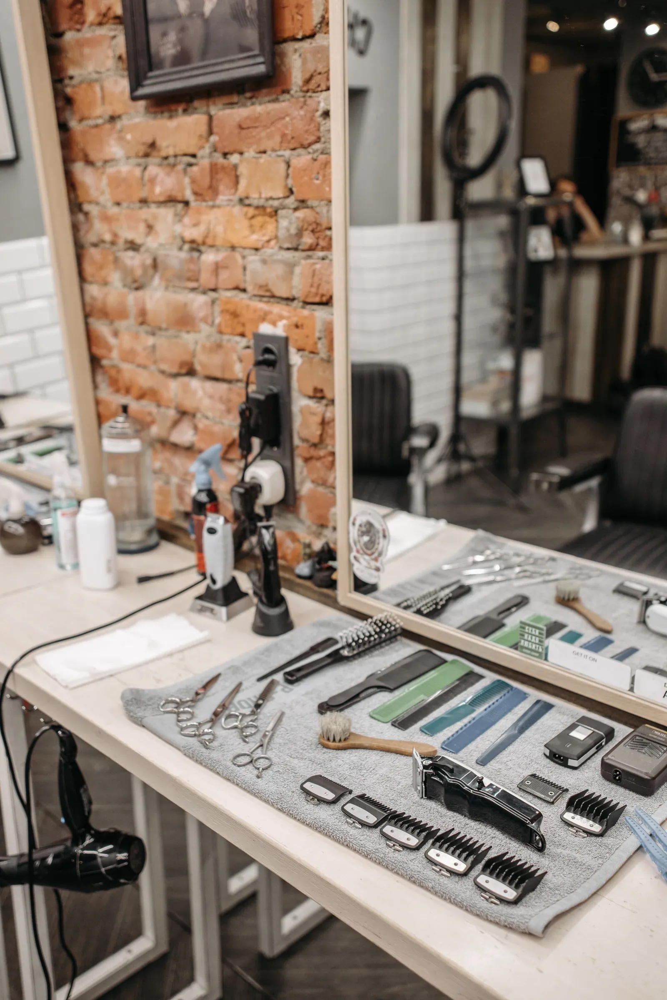
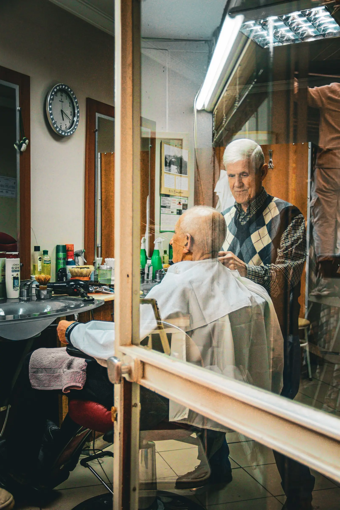
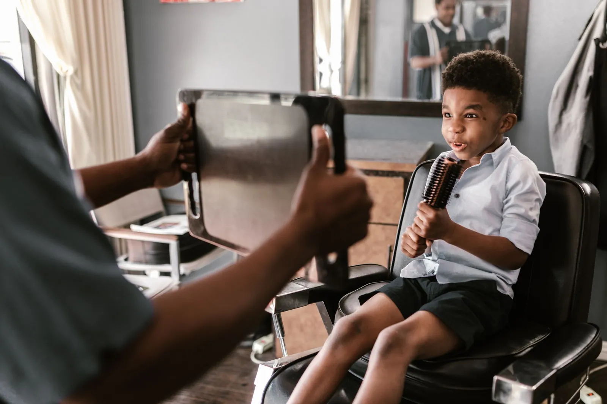

Skin fades
The sharp, blended fade Bamford regulars ask for by name — low, mid or high, finished with a razor-sharp hairline.
- Graded blend, no harsh lines
- Razor-finished edges
- Styled to suit your hair
Barbershop · Bamford, Rochdale
One of Rochdale’s top three barbers. Professional, up-to-date trend haircuts in a relaxed, family-friendly shop on Bury Road — walk in, or book ahead and skip the queue.

What we do
Experienced barbers, sharp tools and a proper consultation before the clippers come out. Scroll through the chair’s most-booked services — every one finished with a clean neckline and a mirror check.
Good to know: walk in any time we’re open, or book ahead and you won’t have to wait in the queue. Call 01706 627138 or message the shop on Facebook.

The sharp, blended fade Bamford regulars ask for by name — low, mid or high, finished with a razor-sharp hairline.

Scissor work and clipper work in equal measure — tidy short back and sides, textured tops and the timeless styles that never date.

Beards shaped to the face — tidied, lined up and kept looking intentional, whether it’s short stubble or a full beard.
Patient, unhurried cuts for younger clients. The team are known for being delightful with children — and for putting parents at ease too.
Beard work
A good beard trim is half haircut, half face shape. The barbers take their time over the lines that make the difference — then finish the cut so hair and beard sit together, not apart.
The chair experience
No appointments system to wrestle with, no waiting around wondering. Four simple steps, and you’re out the door looking sharp.
Walk-ins are always welcome. Prefer a set time? Book ahead and you won’t have to wait in the queue.
Settle in, have a chat about what you’re after, and enjoy a complimentary tea, coffee, choc or beer while you wait.
Experienced barbers, professional and up-to-date trend haircuts — fades, classics, beard work and kids cuts.
A clean neckline, a look in the mirror, and a finish you’re happy with before you head back out onto Bury Road.


Services & prices
The services the shop is known for. Every service includes a consultation, a clean finish and a mirror check.
| Service | What’s included | Price |
|---|---|---|
| Skin fade | Graded fade, razor-sharp hairline, styled finish | — |
| Classic cut | Scissor and clipper cut, tidy neckline and sideburns | — |
| Beard trim & shape | Shape, cheek line and neckline, finished with the cut | — |
| Cut & beard trim | The full service — haircut plus beard work in one visit | — |
| Kids cut | Patient, unhurried cut for younger clients | — |
Prices on request — call 01706 627138 or message the shop on Facebook and they’ll confirm today’s prices.
From the chair
Fades, scissor work, beard shaping and the shop itself. Tap any photo to see it larger.
Photos are representative of the barbering on offer at Bamford Barbers.

Why locals choose Bamford
ThreeBestRated named Bamford Barbers one of the 3 Best Barbers in Rochdale, scoring 111 out of 120 inspection points. Here’s what the reviews keep coming back to.
Professional, current styles — not last year’s cut. The barbers keep up with what’s actually being asked for.
A friendly shop where you can unwind. Customers describe the atmosphere as warm, friendly and relaxing.
The team are delightful with kids and make families feel comfortable — first haircuts included.
Walk-in service is always welcome, and a booking option means you no longer have to wait in the queue.
Complimentary drinks while you wait — tea, coffee, chocolates and a beer, on the house.
Rated 4.6 and listed among the 3 Best Barbers in Rochdale by ThreeBestRated. See the listing.
Kids & family
Bamford Barbers is a family-friendly shop. Children are looked after with patience, parents are made comfortable, and nobody’s rushed out of the chair.

Good to know
Both. Walk-in service is always welcome — just come to 841 Bury Road while we’re open. If you’d rather not wait, book ahead and you won’t have to queue: call 01706 627138 or message the shop on Facebook.
Yes — kids cuts are one of the shop’s regular services. The barbers are known for being patient and delightful with children, and for making families feel comfortable.
Monday and Wednesday 8am–6pm, Thursday 9am–8pm, Friday 8am–7pm and Saturday 8am–5pm. The shop is closed on Tuesdays and Sundays.
841 Bury Road, Rochdale OL11 4AA, in Bamford. You’ll find the full address, a map and directions in the Visit section below.
Yes. Beard trims and shaping are a core service — on their own or added to any haircut, with the cheek line, neckline and finish done properly.
Yes — complimentary tea, coffee, chocolates and beer are part of the visit, while you wait or while you’re in the chair.
Find us
On Bury Road in Bamford, Rochdale. Walk in during opening hours, or get in touch first — whichever suits.
841 Bury Road
Rochdale OL11 4AA, UK
Get directions
| Monday | 8am – 6pm |
| Tuesday | Closed |
| Wednesday | 8am – 6pm |
| Thursday | 9am – 8pm |
| Friday | 8am – 7pm |
| Saturday | 8am – 5pm |
| Sunday | Closed |
Phone: 01706 627138
Email: bamfordbarbers@gmail.com
Facebook: facebook.com/bamfordbarbers
Ready when you are
Walk in any time we’re open, or book ahead and skip the queue. One call or one message is all it takes.
Open late on Thursdays until 8pm · Closed Tuesdays & Sundays